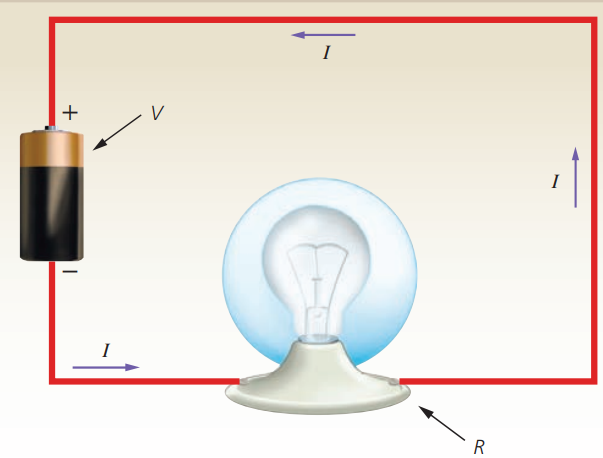

Conceptos generales
Cinemática
Dinámica
Electrostática
Electrodinámica
Ley de OhmGeorg Simon Ohm (1787-1854), físico y profesor alemán, utilizó en sus experimentos instrumentos de medición bastante confiables y observó que si aumenta la diferencia de potencial en un circuito, mayor es la intensidad de la corriente eléctrica; también comprobó que al incrementar la resistencia del conductor, disminuye la intensidad de la corriente eléctrica. Con base en sus observaciones, en 1827 enunció la siguiente ley que lleva su nombre:
Ley de Ohm.
La intensidad de la corriente eléctrica que pasa por un conductor en un circuito eléctrico es directamente proporcional a la diferencia de potencial aplicado a sus extremos e inversamente proporcional a la resistencia del conductor.

Matemáticamente esta ley se expresa de la siguiente manera:
\(\displaystyle I=\frac{V}{R} \)
Donde:
\(V\) = diferencia de potencial aplicado a los extremos del conductor en volts (V)
\(R\) = resistencia del conductor en ohms (Ω)
\(I\) = intensidad de la corriente que circula por el conductor en amperes (A)
Al despejar la resistencia de la expresión matemática de la ley de Ohm, tenemos que:
\(\displaystyle R=\frac{V}{I} \)
Con base en esta ecuación la ley de Ohm define a la unidad de resistencia eléctrica de la siguiente manera: la resistencia de un conductor es de 1 ohm (1 Ω) si existe una corriente de un ampere, cuando se mantiene una diferencia de potencial de un volt a través de la resistencia.
\(\displaystyle R\,(ohms) = \frac{V\,(volts)}{I\,(en\,amperes)} \)
es decir
\(\displaystyle 1\,\Omega =\frac{1\,V}{1\,A} \)
Cabe señalar que la ley de Ohm presenta algunas limitaciones, como son:
a) Se puede aplicar a los metales, mismos que reciben el nombre de conductores óhmicos, pero no así al carbono o a los materiales utilizados en los transistores, es decir, a los semiconductores, que se llaman conductores no óhmicos, pues no siguen la ley de Ohm, ya que su resistencia no permanece constante cuando se aplican voltajes diferentes.
b) Al utilizar esta ley debe recordarse que la resistencia cambia con la temperatura, pues todos los materiales se calientan por el paso de la corriente.
c) Algunas aleaciones conducen mejor las cargas en una dirección que en otra.
Ejemplo 1. Un tostador eléctrico tiene una resistencia de 30 Ω cuando está caliente. ¿Cuál será la intensidad de la corriente que fluirá al conectarlo a una línea de 120 V?
Datos:
\(R\) = 30 Ω
\(V\) = 120 V
\(I\) = ?
Fórmula:
\(\displaystyle I=\frac{V}{R} \)
Sustitución:
\(\displaystyle I=\frac{120\,V}{30\,Ω} \)
\(\displaystyle I=4\,A\)
Ejemplo 2. Un alambre conductor deja pasar 7 A al aplicarle una diferencia de potencial de 110 V. ¿Cuál es su resistencia?
Datos:
\(V\) = 110 V
\(I\) = 7 A
\(R\) = ?
Fórmula:
\(\displaystyle I=\frac{V}{R} \)
Despejando
\(\displaystyle R=\frac{V}{I} \)
Sustitución:
\(\displaystyle R=\frac{110\,V}{7\,A}\)
\(\displaystyle R =15.7\,Ω\)
Ejemplo 3. Calcular la diferencia de potencial aplicada a una resistencia de 15 Ω, si por ella fluyen 6 A.
Datos:
\(I\) = 6 A
\(R\) = 15 Ω
\(V\) = ?
Fórmula:
\(\displaystyle I=\frac{V}{R} \)
Despejando
\(\displaystyle V=I\cdot R \)
Sustitución:
\(\displaystyle V=(6\,A)(15\,Ω)\)
\(\displaystyle V=90\,V\)
Haz click en el siguiente enlace para ver tutoriales relacionados con el tema.